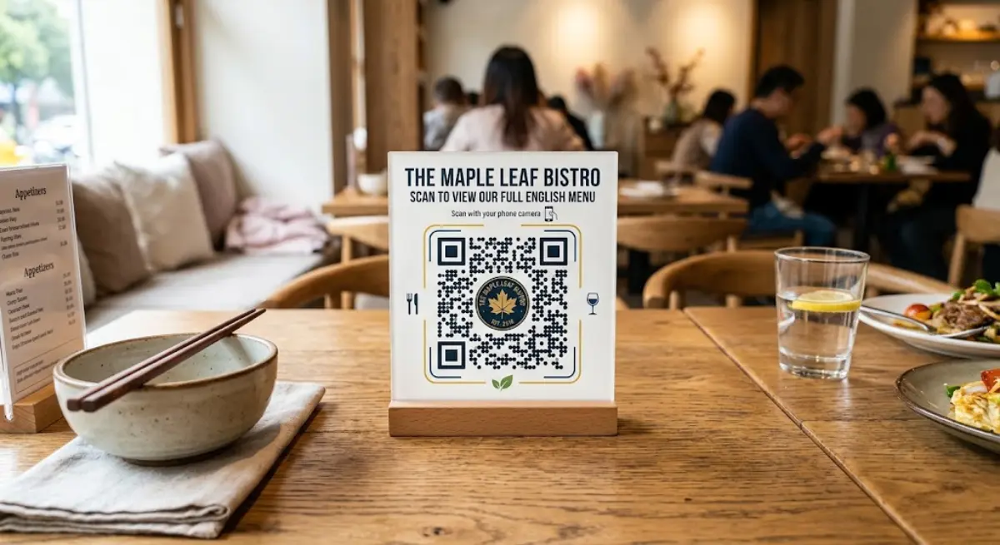
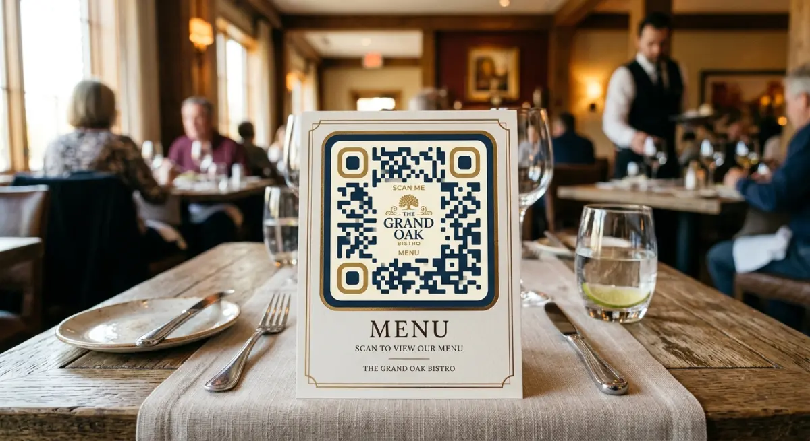

Boost Your Brand with Custom QR Codes Featuring Your Logo
In today’s mobile-first digital landscape, bridge technology between physical touchpoints and online experiences is no longer optional—it is essential. Quick Response (QR) codes have evolved from simple black-and-white pixelated grids into powerful, visually branded marketing gateways. Whether you are running a retail campaign, managing event ticketing, or directing customers to a digital menu, utilizing a custom QR code generator with logo capabilities allows your brand to maintain visual consistency while maximizing customer engagement.
Adding your brand logo, custom colors, and unique call-to-action (CTA) frames transforms a generic QR code into a recognizable marketing asset. Research shows that branded QR codes can increase scan rates by up to 30% compared to standard black-and-white codes, primarily because custom visual elements build instant trust with users.
In this comprehensive guide, we will explore how custom QR codes work, compare dynamic versus static codes, outline design best practices, and demonstrate how you can instantly create professional branded QR codes using MatrixQR.

Why Your Brand Needs a Custom QR Code Generator with Logo
When users encounter an unbranded, plain QR code in public, security concerns often arise. Cyber threats such as "QRishing" (QR code phishing) have made consumers cautious about scanning random codes. A customized QR code featuring your company’s logo and brand identity immediately signals legitimacy and professionalism.
Key Benefits of Custom Branded QR Codes
- Enhanced Brand Recognition: Incorporating your official logo, brand colors, and iconography ensures that your offline marketing materials (brochures, packaging, banners) remain cohesive with your online brand identity.
- Higher Scan & Conversion Rates: Visually appealing QR codes featuring clear Call-to-Action frames (e.g., "Scan to View Menu" or "Scan for 15% Off") attract significantly higher user interaction.
- Improved Trust & Security: A recognizable logo inside the QR code reassures consumers that scanning the code will direct them to an authentic, secure destination.
- Versatile Application Across Channels: From product packaging and business cards to TV commercials and print ads, custom QR codes seamlessly fit into any visual medium without disrupting your aesthetic.
Static vs. Dynamic QR Codes: Which Should You Choose?
Before generating your code, it is critical to understand the technical difference between Static and Dynamic QR codes. Depending on your business goals, choosing the right type will impact your campaign's long-term flexibility and tracking capabilities.
| Feature | Static QR Codes | Dynamic QR Codes |
|---|---|---|
| URL Editability | Permanent (Cannot be changed after creation) | Fully Editable (Change target destination anytime) |
| Scan Analytics | No tracking available | Trackable (Total scans, location, device, time) |
| Data Density & Size | Larger data creates denser, complex codes | Keeps code simple via a lightweight redirection URL |
| Best For | One-time links, personal Wi-Fi, vCards | Marketing campaigns, digital menus, product labels |
| Lifespan | Never expires | Flexible management via digital dashboard |
For most professional and marketing use cases, Dynamic QR Codes are the gold standard. They allow you to update your landing page URL without reprinting physical promotional materials, saving your business significant printing and administrative costs.

Key Best Practices for Designing High-Converting QR Codes
While customizing your QR code with logos and colors is effective, maintaining scannability is paramount. A poorly designed QR code that fails to scan can frustrate users and hurt your brand image. Follow these battle-tested design rules:
1. Maintain High Color Contrast
Camera sensors scan QR codes by detecting the contrast between the foreground blocks (modules) and the background.
- Do: Use dark foreground colors on a light background (e.g., navy blue on white).
- Don't: Never use light foreground colors on a dark background, or subtle contrast pairs like yellow on white.
2. Safeguard the Quiet Zone
The "Quiet Zone" is the blank margin surrounding the exterior of your QR code. Scanning software relies on this border to distinguish the code from adjacent text or graphics. Always keep a clear margin equal to at least 4 modules wide around your code.
3. Choose the Right Logo Size and Placement
When using a custom QR code generator with logo, position the logo in the center of the code matrix. Ensure the logo does not obscure the three large corner positioning squares (finder patterns). The center logo should occupy no more than 25-30% of the total surface area to prevent scanning errors.
4. Utilize High Error Correction Levels (ECC)
QR codes utilize Reed-Solomon error correction to restore damaged or obscured data. When adding a logo in the center, choose an Error Correction Level of H (High - up to 30% recovery) or Q (Quartile - up to 25% recovery). This ensures the camera reads the code perfectly despite the central logo overlay.
5. Always Export in High Resolution
Vector formats like SVG or high-resolution PNG files ensure your QR code remains crisp and sharp whether printed on a small business card or a massive outdoor billboard.
Step-by-Step Guide: How to Create a Custom QR Code with Logo on MatrixQR
Creating a professional, secure, and visually appealing QR code takes less than two minutes using MatrixQR. No complex technical setup or mandatory registration is required for basic creation.
Follow These Simple Steps:
-
Select Your Target Data Type:
Navigate to MatrixQR and select your content category: Website URL, VCard contact card, Wi-Fi network credentials, plain text, or social media profile. -
Enter Your Information:
Paste destination links or input text details directly into the input fields. -
Upload Your Brand Logo:
Click on the Logo Upload tab. Select your transparent PNG or SVG brand icon. MatrixQR automatically centers and scales your logo while configuring optimal error correction settings. -
Customize Visual Elements:
Adjust module shapes, choose gradient or solid brand colors, and pick an eye-catching CTA frame (e.g., "SCAN ME"). -
Test and Export:
Before printing, test-scan your generated code using both iOS and Android smartphones under different lighting conditions. Once confirmed, download your high-resolution asset in PNG or vector SVG format.
Frequently Asked Questions (FAQ)
Will adding a logo make my QR code hard to scan?
Not if you use standard error correction standards. MatrixQR automatically applies built-in error correction algorithms when a logo is uploaded, ensuring camera sensors retain 100% scan accuracy.
Can I track how many people scan my QR code?
Yes! By selecting a Dynamic QR Code on MatrixQR, you gain real-time analytics access, including total scan counts, geographic locations, operating systems, and device breakdown data.
Do QR codes generated on MatrixQR ever expire?
Static QR codes generated via MatrixQR never expire and remain functional indefinitely. Dynamic QR codes remain active based on your platform settings and link configuration.
Start Creating Branded QR Codes Today
A customized QR code bridges physical touchpoints with your digital ecosystem. By moving away from generic, plain black-and-white grids and embracing branded elements, you increase user trust, elevate scan metrics, and deliver a unified visual presence.
Ready to upgrade your marketing materials? Experience instant generation, vector outputs, privacy-first infrastructure, and zero registration barriers. Create your free branded code now with the MatrixQR Custom QR Code Generator with Logo!